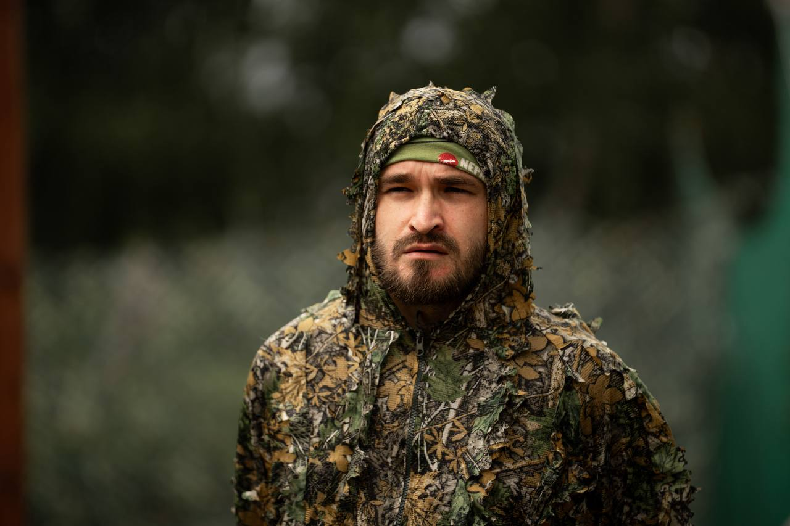
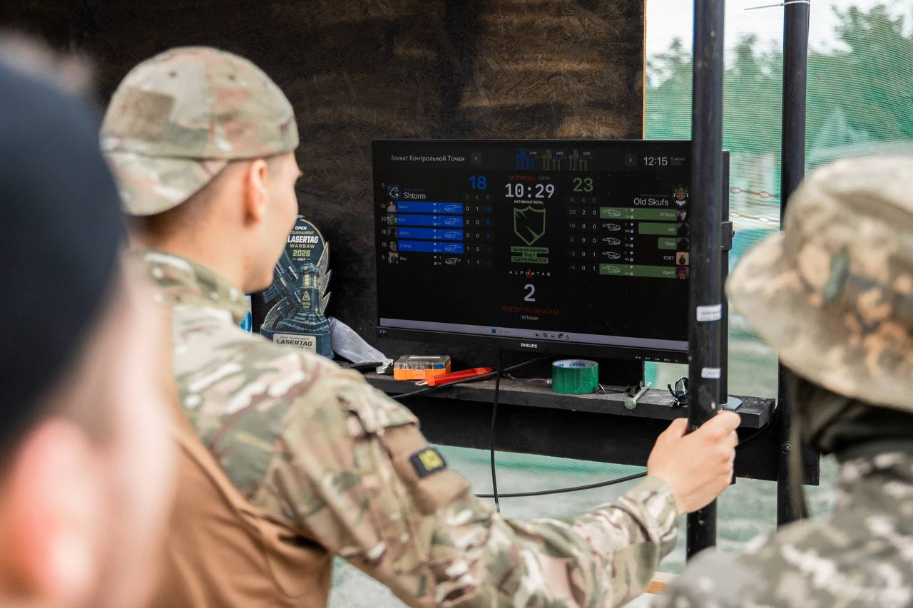
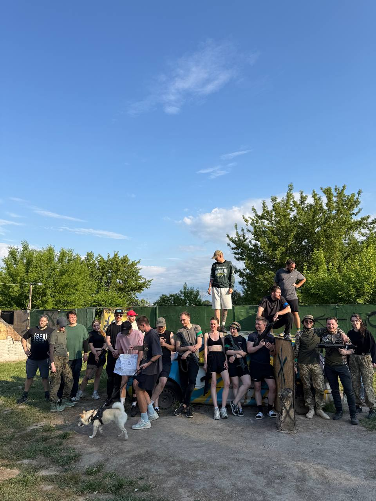
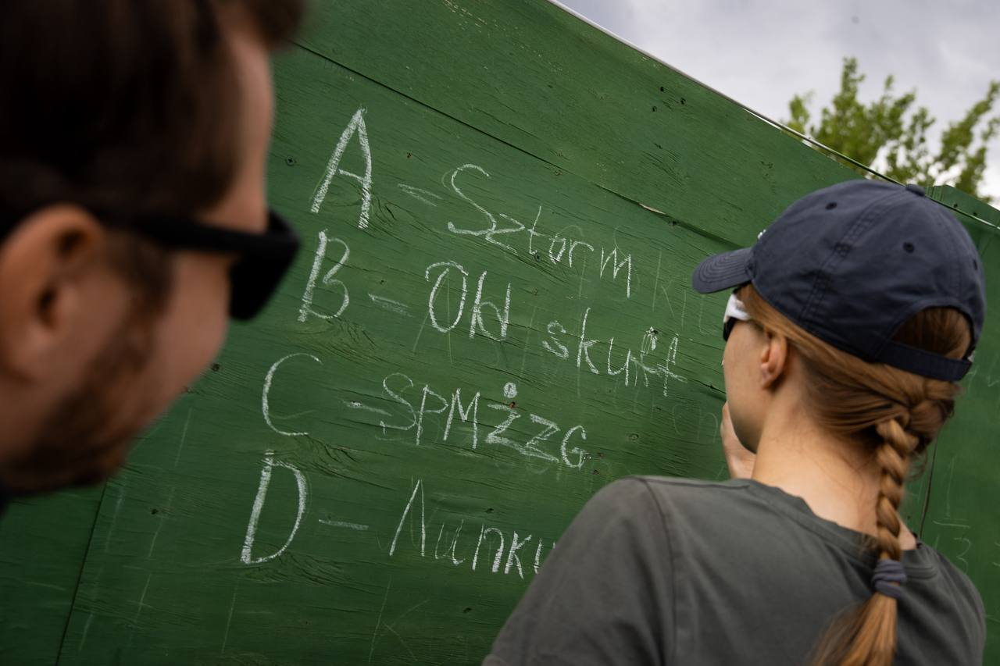
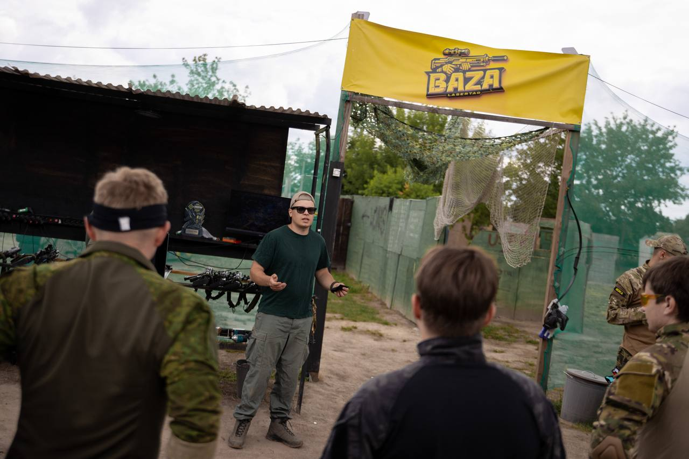
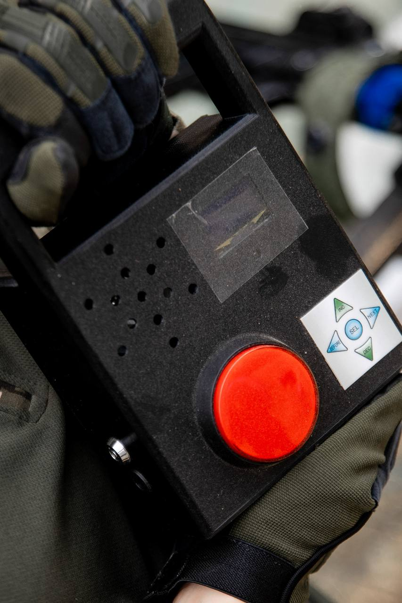
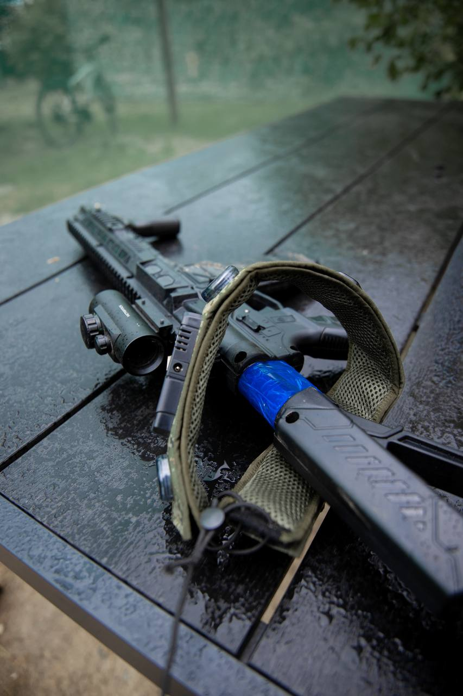
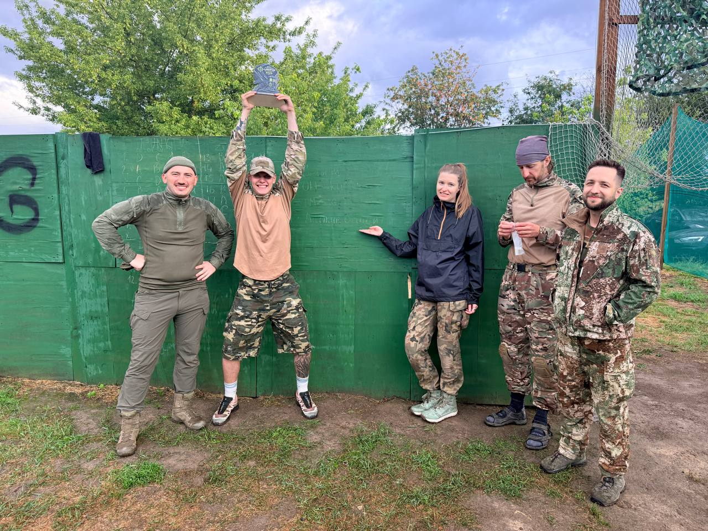
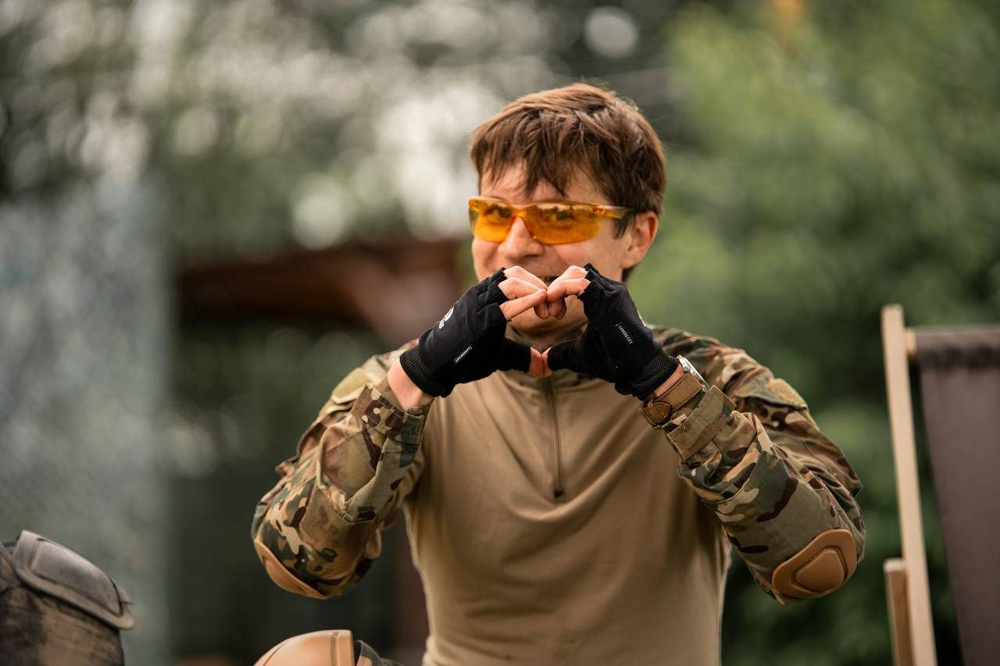

Środowe gry są przygotowane dla osób, które chcą grać bardziej taktycznie: komunikacja, cele rundy i praca drużynowa są ważniejsze niż przypadkowe bieganie po arenie.

Warszawa / open games
Klubowa scena laser tag dla graczy solo, ekip i drużyn. Sprawdź najbliższe gry, zapisz się do składu i śledź rankingi po każdej rundzie.
Ranking 05.07.26
Wyniki z 12 gier. Karty pokazują miejsce, punkty i miejsce na avatar. Przewijaj ranking po 5 graczy.


 +30
+30



 +30
+30
Harmonogram
18:30 / scenariusz Counter-Strike
18:00 / otwarta gra
Daty planowane w czacie Telegram
Klub

Środa / 18:30Stały scenariusz środowy: dwie drużyny, cele taktyczne i zapis solo albo składem.
Czytaj artykułŚrodowe gry są przygotowane dla osób, które chcą grać bardziej taktycznie: komunikacja, cele rundy i praca drużynowa są ważniejsze niż przypadkowe bieganie po arenie.

Niedziela / 18:00Najprostszy wejściowy format dla nowych graczy, rodzin i osób bez własnej drużyny.
Czytaj artykułNiedziela jest najlepszym startem dla nowych graczy: można przyjść solo, z rodziną albo znajomymi, a organizator pomaga dobrać drużyny i wyjaśnia zasady przed grą.

Telegram / datyDaty, lokalizacje, regulaminy i listy graczy publikujemy w klubowym czacie Telegram.
Czytaj artykuł
Największa aktualizacja w historii naszej areny: statystyki w czasie rzeczywistym, efekty dźwiękowe jak w FPS-ach i nowe scenariusze rozgrywek.
Czytaj artykułTechnologia zmienia sposób, w jaki gramy. Dlatego w Lasertag Warsaw wprowadziliśmy największą aktualizację w historii naszej areny, która przenosi rozgrywkę na zupełnie nowy poziom.
Nasza arena została pokryta dedykowaną siecią Wi-Fi, dzięki której całe wyposażenie komunikuje się w czasie rzeczywistym. Oznacza to, że gracze mogą na bieżąco śledzić swoje wyniki i statystyki podczas rozgrywki.
To rozwiązanie otwiera zupełnie nowe możliwości - od dokładniejszej analizy własnej gry po jeszcze bardziej dynamiczne scenariusze i wydarzenia na polu walki.
Każda eliminacja dostarcza jeszcze większych emocji. System rozpoznaje wyjątkowe osiągnięcia i odtwarza komunikaty głosowe znane z najpopularniejszych gier FPS.
Double Kill, Triple Kill, Killing Spree i wiele innych efektów sprawiają, że każda akcja daje jeszcze większą satysfakcję i pozwala poczuć klimat profesjonalnej gry komputerowej.



Aktualizacja umożliwiła stworzenie zupełnie nowych trybów gry.
Jednym z nich jest scenariusz inspirowany klasycznym trybem podkładania bomby. Drużyny muszą współpracować, aby podłożyć lub rozbroić bombę, a cały przebieg rozgrywki uzupełniają realistyczne komunikaty głosowe oraz odliczanie czasu, dzięki czemu żaden uczestnik nie przegapi najważniejszych wydarzeń.
To jednak dopiero początek. System pozwala nam stale rozwijać kolejne scenariusze oraz dodawać nowe mechaniki, które wcześniej nie były możliwe do zrealizowania.
Naszym celem było stworzenie rozgrywki, która daje emocje porównywalne z najlepszymi grami komputerowymi, jednocześnie pozostając aktywnością na świeżym powietrzu.
Połączenie nowoczesnego sprzętu, inteligentnego systemu komunikacji, realistycznych efektów dźwiękowych i zaawansowanych scenariuszy sprawia, że gracze mogą całkowicie zanurzyć się w świecie laserowego paintballa.
To rozwiązanie jest efektem wielu miesięcy pracy nad infrastrukturą naszej areny i konfiguracją całego systemu. Dzięki własnej sieci Wi-Fi oraz najnowszej generacji sprzętu możemy oferować funkcje, które do tej pory były dostępne jedynie w grach komputerowych.
Nieustannie rozwijamy naszą bazę i już pracujemy nad kolejnymi nowościami, które jeszcze bardziej zwiększą realizm i interaktywność rozgrywek.
Jeżeli chcesz przekonać się, jak wygląda laserowy paintball nowej generacji, zapraszamy do Lasertag Warsaw. Przyjdź ze swoją drużyną i sprawdź, jak wygląda przyszłość aktywnej rozrywki.

Cztery pięcioosobowe drużyny, nowy scenariusz CS, zacięta walka do końca i zwycięstwo Hard Skill prowadzonego przez Shveda.
Czytaj artykuł5 lipca na bazie Lasertag Warsaw odbył się kolejny turniej Open Lasertag, który zgromadził cztery pięcioosobowe drużyny. Do rywalizacji stanęły trzy zespoły z Warszawy oraz jedna drużyna z Gdańska, a poziom rozgrywek od pierwszego meczu zapowiadał niezwykle wyrównaną walkę.
Tegoroczny turniej był wyjątkowy nie tylko ze względu na wysoki poziom zawodników, ale również dlatego, że uczestnicy po raz pierwszy zmierzyli się w nowym scenariuszu CS, inspirowanym klasycznymi rozgrywkami Counter-Strike.
Oprócz niego drużyny rywalizowały również w dynamicznych scenariuszach biegowych, wymagających doskonałej współpracy, szybkiego podejmowania decyzji i skutecznej komunikacji.
Po serii niezwykle zaciętych spotkań zwycięstwo wywalczyła drużyna Hard Skill, prowadzona przez Shveda, zdobywając 140 punktów w klasyfikacji końcowej całego turnieju.
Drugie miejsce zajęła drużyna Sztorm z Gdańska. Goście byli bardzo blisko zwycięstwa i do pierwszego miejsca zabrakło im naprawdę niewiele. Ich świetna gra pokazała, że poziom rywalizacji w polskim laserowym paintballu stale rośnie.
Jeśli chcesz wygrywać z najlepszymi, musisz pojawiać się na środowych treningach.
Po zakończeniu turnieju wielu zawodników zgodnie podkreślało, że regularne treningi pozwalają doskonalić komunikację, taktykę oraz zgranie drużyny, które często decydują o zwycięstwie w najbardziej wyrównanych meczach.
Gratulujemy wszystkim uczestnikom za sportową rywalizację, świetną atmosferę oraz widowiskowe akcje na polu walki. Dziękujemy również drużynie z Gdańska za przyjazd i stworzenie fantastycznego widowiska.
Już wkrótce w zakładce Turniej pojawi się szczegółowa analiza wszystkich spotkań przygotowana przez naszego stałego komentatora. Będzie można znaleźć tam omówienie najciekawszych akcji, decyzji taktycznych oraz kluczowych momentów, które przesądziły o końcowej klasyfikacji.
Do zobaczenia na kolejnych turniejach oraz środowych treningach w Lasertag Warsaw!
В первую очередь хочу поблагодарить организаторов - Лёшу и Шведа - за то, что они делают для лазертага в Варшаве. Особенно Шведа.
Czytaj artykułОбзор лазертаг-соревнований в Варшаве 1. Благодарность организаторам В первую очередь хочу поблагодарить организаторов - Лёшу и Шведа - за то, что они делают для лазертага в Варшаве. Особенно Шведа. На мой взгляд, именно Швед стал человеком, который своими усилиями сделал этот чемпионат возможным. Более того, он смог собрать команды: лично ту команду, в которой играл я, явно собирал именно он. Лёша и Швед проделали огромную работу: настраивали оборудование, тестировали сценарии, переживали за каждый косяк и каждый нюанс. Но чемпионат состоялся. И за это вам, ребята, большое спасибо. Организация действительно была на высоком уровне. Было видно, сколько работы было сделано: не только с оборудованием и сценариями, но и с самим полигоном. Швед сделал всё возможное и невозможное, чтобы убрать сквозные прострелы от аптек. Это лишило команды части преимущества, потому что раньше по этим прострелам можно было быстро понять, куда и сколько бойцов переместилось после стартового гонга. Отдельно стоит отметить, что Швед сам разработал и воплотил в жизнь игровые устройства, например бомбу. И это уже уровень, когда человек не просто организовывает игру, а фактически собирает свой маленький лазертаг-ВПК. В какой-то момент казалось, что если бы Шведу дали ещё неделю, он бы построил на полигоне метро между базами. 2. Команды На соревновании собралось четыре команды. И, как я писал ранее, во многом это произошло благодаря Шведу. Команда D - «Липкие бандиты» Швед организовал свою команду, которую он готовил, тренировал, и которая в итоге показала действительно великолепный результат. Ребята назвали себя «Липкие бандиты» - с отсылкой к фильму «Один дома». Название отличное: вроде смешное, но когда они заходят тебе за спину, смеяться уже не хочется. Команда A - Sztorm Очень здорово, что в Варшаву приехали ребята из Гданьска - команда Sztorm. Это была одна из команд-фаворитов турнира. Sztorm - хорошая, слаженная команда. Они отлично чувствуют друг друга, показывают стабильную и сильную игру. Видно, что ребята играют не первый день и умеют адаптироваться к сложным ситуациям. Команда C - SPMZZG Также была ещё одна варшавская команда имени Кометы - SPMZZG. Что бы это ни значило. Это достаточно сильная команда. Её костяк состоял из опытных игроков, но также были ребята, которые играют в лазертаг первый сезон. При этом они уже показывают отличный результат. Команда B - Old Skuf И, наконец, команда, в которой принимал участие я, - Old Skufs. Буду честен: название мне безумно не нравится, результаты голосования не исправишь. Название Old Skufs, конечно, обязывает. Перед стартом хотелось не стратегию обсуждать, а давление померить и спросить, где ближайшая лавочка. 3. Формат соревнований Контрольные точки Первый сценарий - классические беговые точки. Их было три, и они располагались в стандартных для этой площадки местах: * «Жабка»; * точка недалеко от старой Fabia; * «Бюро». Все играли со всеми по два раунда, меняясь базами. Этот формат мне очень понравился, потому что он давал возможность достаточно объективно оценить, как играют команды. Подсчёт был простой: за каждую точку, которая светилась цветом команды, давалось 7 очков. Соответственно, за один раунд команда могла максимально заработать 21 очко. Сценарий с бомбой Второй сценарий был чем-то новым именно для соревновательного формата. По сути, это была попытка сделать игру в стиле Counter-Strike со сценарием закладки бомбы. Сценарий с бомбой получился очень динамичным. Настолько динамичным, что иногда мозг ещё выбирал тактику, а ноги уже куда-то побежали. Бомбу нужно было устанавливать ближе к месту респауна контртеррористов. Эти зоны были отмечены специальными квадратами. Одна зона находилась перед «Жабкой», ближе к базе A. Вторая - перед «Бюро», тоже ближе к базе A. Контртеррористы стартовали с базы A. Террористы должны были за 1 минуту 40 секунд заложить бомбу, после чего её нужно было защищать ещё 40 секунд до активации. Команды играли три раунда за террористов и три раунда за контртеррористов. Всего - шесть раундов, со сменой сторон после первых трёх. За победу в раунде давалось 7 очков. Максимально за сценарий можно было заработать 42 очка. База A была синей, база B - зелёной. 4. Оборудование Alphatag Швед и Алекс были одержимы идеей провести соревнования на новом, новом поколении лазертаг-оборудования от под названием Alpha. Поэтому подготовка к этим соревнованиям иногда напоминала не тренировочный процесс, а лёгкий технический мазохизм. Чтобы вы понимали: за стандартную тренировку мы могли отыграть буквально пару сценариев, потому что то что-то отвалилось, то что-то работало не так, то что-то нужно было перезапустить, то ещё что-нибудь происходило. Но ребята действительно старались привести это оборудование в рабочее состояние. По моему личному мнению, это оборудование совершенно не подходит для соревнований. Я отлично понимаю желание Алекса и Шведа добавить зрелищности и дать зрителям возможность отслеживать игру в реальном времени. Но с точки зрения спортивного лазертага это оборудование не подходит. Разные таггеры Ещё до начала соревнований у меня была возможность пристрелять оборудование, и я обратил внимание, что у каждого таггера по-разному выглядит пятно. У некоторых таггеров оно было достаточно большим, у некоторых - почти в два раза меньше. Потом, уже во время игры, я почувствовал на себе разницу в работе разных таггеров. У меня была возможность попробовать четыре разных таггера, и каждый из них работал по-своему. Для соревнований это, на мой взгляд, недопустимо. Архитектура оборудования Вторая большая проблема заключается в архитектуре. Оборудование подключается к общей системе через Wi-Fi. При этом основная вычислительная нагрузка, а также связь с Wi-Fi ложится на повязку. А в повязке, по определению, не может быть большого аккумулятора и достаточно мощного процессора, который способен быстро обрабатывать все входящие и исходящие сигналы: как от таггера, так и от других элементов системы Alphatag. Из-за этого появляются задержки выстрелов, сложность с пониманием нанесённого урона, заторможенность работы спускового крючка. То есть ты уже нажал, а выстрел происходит чуть позже. Alphatag - это когда ты уже выстрелил, противник уже ушёл, ты уже передумал, а оборудование только начинает осознавать, что что-то произошло. Также возникают такие замечательные вещи, как невозможность нормально посчитать, сколько патронов ты выпустил из магазина, и не совсем адекватная работа датчика в стволе. Скажу так: для детского утренника это замечательно. Но для соревнований, особенно в дисциплине спортивного лазертага, такое оборудование, на мой взгляд, не годится. Оно уничтожает значительную часть тактической составляющей и снижает объективность происходящего. Профессиональные навыки игроков начинают работать хуже. Например, следить за боезапасом практически невозможно. Если на обычных соревнованиях даже при скорострельности до 800 я без проблем могу примерно назвать количество патронов в магазине, то здесь промах в 5–7 патронов - это уже почти норма. Также игроки, которые обычно отлично понимают, с какой стороны их поразили, и меняют стиль игры в зависимости от этого, здесь теряют этот навык. На этом оборудовании сложно понять, в какой именно датчик прилетело. У меня были разные соревнования, в том числе на LSD-оборудовании, которое тоже работало через Wi-Fi. Но таких приключений, как с Alphatag, я ещё не видел. 5. Разбор матчей моей команды Давайте по порядку. Я хочу отдельно описать игры моей команды. По сути, полноценной командой мы ещё не были: до соревнования ребята ни разу не собрались все вместе. Поэтому движения в двойках, а тем более в тройках, мы не отрабатывали. У нас был начальный план, который мы старались развивать по мере возможности. В этот раз у нас капитанил Агент - достаточно опытный игрок, который уже неплохо зарекомендовал себя на других соревнованиях. Он чаще всего предлагал стратегию, определял, что мы делаем, а чего не делаем, и перебалансировал стороны. Также в команде были молодой и амбициозный игрок Тсиса, легенда варшавского лазертага Алекс, по совместительству руководитель клуба, и легенда минских лазертаг-баталий Як. Сборная получилась интересная: немного опыта, немного амбиций, немного боли в коленях - и много желания не опозориться. Контрольные точки: Old Skuf vs Sztorm База A Blue - Old Skuf, база B Green - Sztorm. Счёт: 14:7 в пользу Old Skuf Первую баталию мы начинали с командой из Гданьска - Sztorm. Я понимал, что это будет сложный бой, и что независимо от результата нам нужно сохранить силы, чтобы продолжить соревнования. Мы договорились играть по схеме 2-1-2: два бойца на левый фланг, один в центр и два на правый фланг. Основными точками интереса были «Жабка» слева и «Бюро» справа. На левую точку пошли Агент и Торт, на правую - Тсиса и Як. Алекс работал по диагонали с кавалерки, помогая и на «Жабке», и на «Бюро». В первом сценарии наша стратегия сработала. С базы A игра у нас складывалась неплохо: удалось зайти за шиворот со стороны «Жабки», отсекать малое поле и не давать противнику развиваться в центре. Алекс занял хорошую огневую позицию и прикрывал «Жабку», фактически стреляя противнику в спины. Команда из Гданьска теряла драгоценные секунды, и это позволило нам закрепиться. Штормовцы быстро пытались адаптироваться: собирали кулак из трёх бойцов и сначала давили «Жабку», потом «Бюро». Но времени они уже потеряли слишком много. В итоге, к нашему большому удивлению, мы выиграли две из трёх точек - «Жабку» и «Бюро». Общий счёт: 14:7 в пользу Old Skuf. База A Blue - Sztorm, база B Green - Old Skuf. Счёт: 21:0 в пользу Sztorm Через пару раундов была ответная встреча со Sztorm, но теперь мы начинали с базы B, то есть с зелёной базы. Мы решили не менять стратегию и снова сыграть 2-1-2. Нашими приоритетами были «Жабка» и точка недалеко от кавалерки, она же Fabia. Но игра пошла не по нашему плану. Во-первых, мне показалось, что зелёные таггеры работают не так, как синие. Во-вторых, полигон со стороны базы B ощущался менее сбалансированным. Sztorm уже успел адаптироваться к полигону и оборудованию и начал навязывать свою игру. Они не давали нам заходить за шиворот и держали нас ближе к аптеке. Штормовцы начали от защиты, постепенно увеличивая давление. Больше всего у нас получалось давить «Бюро», и какое-то время казалось, что хотя бы одну точку мы удержим. Но в центре и на «Жабке» ситуация была тяжёлой: нам мешала диагональ от кавалерки, нас неплохо сдерживали перекрестным огнем, а если мы и заходили на точку, её быстро перекрашивали. Sztorm показал отличную динамическую перебалансировку. Как только они получили преимущество на «Жабке», они тут же перебросили силы на «Бюро», и даже точка, которая казалась под нашим контролем, быстро перестала быть нашей. Мы допустили серьёзную ошибку: начали челночно бегать на «Жабку» в надежде быстро её перехватить. Исправить это не смогли. Противник, в лице Якуба, отлично просачивался через центр, заходил нам за шиворот и стрелял моим сокомандникам в спину. Как итог - Sztorm забрал все три точки и получил 21 очко. Мы ушли с нулём и с задумчивостью: что же делать дальше? А ещё с надеждой, что это были самые сложные противники на сегодня. Как же мы ошибались… Контрольные точки: Old Skuf vs «Липкие бандиты» База A Blue - «Липкие бандиты», база B Green - Old Skuf. Счёт: 21:0 в пользу «Липких бандитов» В этот раз мы начинали против «Липких бандитов» с зелёной позиции, и это мне уже начинало не нравиться. Для старта мы снова взяли схему 2-1-2. Именно здесь я начал особенно явно замечать странности оборудования. Даже когда я подавлял противника с подготовленной позиции, он мог спокойно развернуться в мою сторону и полностью меня забрать т е шок уязвимость взяла выходной. Плаха по центру имел возможность забегать к нам за шиворот, и отогнать его было очень сложно. Даже если я заходил ему во фланг, видел его, начинал стрелять и снимал одну-две жизни, он мог просто развернуться, не прячась, ответить и забрать меня полностью. Привкус был так себе. Нужно было быстро адаптироваться к этой несправедливости, но в беговых сценариях это сложно: основная цель - захват точки, а не убийство противника. В Team Deathmatch такую проблему можно было бы частично нивелировать сменой позиции после каждого выстрела, но здесь это было почти невозможно из за потери времени. При этом «Липкие бандиты» очень хорошо пользовались прострелами полигона. Они отлично нарезали сектора, а Ява и Швед особенно хорошо работали на малом поле, просачиваясь вдоль забора. Швед использовал фланги, командную коммуникацию и появлялся в нужный момент на портале между малым и большим полем. Как итог - полный проигрыш без особой инициативы с нашей стороны. 21 балл ушёл команде «Липких бандитов». База A Blue - Old Skuf, база B Green - «Липкие бандиты». Счёт: 14:7 в пользу «Липких бандитов» Здесь мы решили играть немного иначе: добавить динамики и перебрасывать Алекса с фланга на фланг, чтобы получать локальное преимущество. Это частично помогло: мы смогли отбить одну точку. Но сделать это было непросто из-за отличной координации противника. В нашей команде были опытные игроки, кроме Тсисы, но назвать нас слаженной командой было сложно. В координации были пробелы. Также не подтвердились мои ожидания, что Катя будет играть статично. Я искренне удивлялся, когда видел её дальше середины поля. Отдельно хочу отметить Яву и Шведа, которые очень хорошо сыгрались на малом поле: они не только держали оборону, но и не давали расслабиться на фланге «Жабки». Noka, которая прибеднялась насчёт колена, при этом имела достаточно скорости, чтобы опережать нас каждый раз, когда мы пытались захватить точку. Ни один захват не обходился без наших потерь. В итоге благодаря синему оборудованию, невероятным усилиям и нескольким удачным трюкам давлением на жалость нам удалось отыграть одну точку. Это лучше, чем ничего. Итог: 14:7 в пользу «Липких бандитов». Контрольные точки: Old Skufs vs SPMZZG База A Blue - Old Skufs, база B Green - SPMZZG. Счёт: 14:7 в пользу Old Skuf На синей базе у нас начала складываться игра против SPMZZG. Стратегия была прежней: 2-1-2, «Жабка» и «Бюро» как приоритетные точки, Алекс динамически помогает то одному флангу, то другому через центр. В этот раз наша цель была достигнута. Вероятно, свою роль сыграло и зелёное оборудование у противника, из-за которого им было сложнее нам противостоять. Хотя отдельно хочу отметить Пашу, который неплохо справлялся с центральной точкой. Как итог: малое поле и «Жабка» были за нами, центральную точку мы потеряли. Возможно, команда противника подустала после предыдущих баталий, но, глядя на следующий результат, я всё же думаю, что свою роль сыграло зеленое оборудование. База A Blue - SPMZZG, база B Green - Old Skufs. Счёт: 21:0 в пользу SPMZZG В этот раз мы снова начинали с ненавистной мне зелёной базы и зелёного оборудования. Мы немного перебалансировали состав: на правый фланг к «Жабке» вместе со мной пошёл Як. Самая неприятная особенность заключалась в том, что команда противников тоже поменяла тактику. Теперь на «Жабку» с их стороны ходил только один Комета. Этого оказалось достаточно, чтобы мы не могли захватить и удержать эту точку. Команда противника применила схему 3-1-1. Чаще всего такая тактика не срабатывает, но в данном случае она дала им хороший перевес. Они смогли зайти на малом поле дальше середины и хорошо держали свой левый фланг, не давая нам продвинуться. Большее количество бойцов со стороны «Бюро» и кавалерки полностью взяло инициативу в свои руки. Итог неутешительный: мы проиграли все три точки без возможности отыгрыша. Не было ни одной точки, которую мы держали хотя бы 60 на 40. Все они были под контролем Кометы. Итог: 21:0 в пользу SPMZZG. 6. Сценарий с бомбой Далее начался сценарий закладки бомбы. Как я уже писал, это очень динамичный сценарий, который требует быстрой реакции и показывает, насколько команда способна адаптироваться к изменившимся условиям. Old Skuf vs «Липкие бандиты». Итог: 21:21 Мы начинали за террористов. Бомбу вручили Яку как самому быстрому и самому смелому. Стратегия была следующей: четыре основных бойца идут в «Бюро», а Торт прикрывает правый фланг - «Жабку» - чтобы защита не зашла нам за спину. После контрольных точек картина для нас выглядела достаточно удручающе, поэтому мы решили играть на драйве. Мы также понимали, что команда Шведа - одна из самых подготовленных к такому сценарию. Первый раунд неожиданно получился удачным. Четыре бойца побежали на малое поле, я смотрел фланг «Жабки». На малом поле, судя по статистике, творилось что-то страшное: Катя настреляла больше всех, но у нас всё равно появилось преимущество, и мы взяли раунд. Во втором раунде мы решили не менять стратегию. И тут я снимаю шляпу перед Шведом: он знал, что будет повторение, и сделал для меня засаду. Он оставил на большом поле трёх бойцов, целью которых было отслеживать меня. После того как они меня загрызли в три ствола, они зашли моим сокомандникам в тыл и разобрали всех в спину. Швед здесь показал замечательную тактику «ходьбы в разрез». Смысл в том, чтобы пройти между распределяющимися по флангам бойцами, закрываясь препятствиями и оставаясь незамеченным. Очень красивая и неприятная вещь. В третьем раунде за террористов нам нужно было удивлять. Мы поняли, что прежняя тактика не сработает, и решили всем кагалом пойти на «Жабку». Четыре бойца бегут на «Жабку», один прикрывает лонг. К сожалению, Швед выставил двух бойцов возле центра, и они быстро нас поджали. Но сама идея нам понравилась - позже мы её ещё применили. В итоге за террористов против «Липких» нам удалось успешно установить и взорвать только одну бомбу. Теперь задача была не дать «Липким» поставить бомбу ни разу. Для обороны мы выбрали схему 1-1-3: один фланг «Бюро», один центр и три бойца на малое поле. Тактика в лоб сработала. На лонге мы видели, куда движется противник, ребята занимали позиции и играли от обороны. Я на своём левом фланге не давал двум бойцам противника пройти к нам в тыл. В этом раунде противник не смог заложить бомбу. В следующем раунде я попросил подстраховать левый фланг и сам сместился ближе к центру. Честно говоря, мне очень хотелось провернуть трюк Шведа через разрез. И так как для нас это уже было just for fun, я попытался проскочить через центр в спину противнику. В начале у меня не возникло особых проблем, пока Плаха ходил где-то слева, но я не ожидал увидеть на большом поле Катю. У нас завязалась хорошая перестрелка. Она, кажется, подумала, что вынесла меня ногами вперед, а я смог проскользнуть с 1% здоровья к «Липким» в тыл и попросить их, так сказать, принять душ. В этот момент я понял, что иногда лучший тактический план - это внезапно оказаться там, где тебя точно не ждали (это мой любимый план), и выглядеть так, будто всё было задумано с самого начала. Сначала ушёл к проотцам Ява, там же погиб Швед. После Шведа погиб Noka. Затем мне оставалось вернуться на большое поле и поблагодарить Катю с Плахой. После такого разгрома я ожидал чего угодно, но не повторения схемы, которую «Липкие» начали играть в следующем раунде. Я был почти уверен, что они понесут бомбу на «Жабку», потому что «Бюро» у них не сработало дважды. Мы переработали схему обороны на засаду в Жабе, но “Липкие” ребята на морально волевых снова потащили бомбу всем составом на «Бюро» и, к моему сожалению, успешно её заложили. Большие молодцы так как для них это было архиважно, и собраться на последнем раунде было впечатляюще. А Скуфы на базе тяжело на меня смотрели, я бы даже сказал косо… Неприятненько. Итог партии - ничья 21:21. Sztorm vs SPMZZG. Итог: 21:21 Следующий сценарий был дракой между Sztorm и ребятами от Кометы. Я внимательно наблюдал за этой игрой, потому что мне было интересно, насколько быстро Sztorm адаптируется к такому формату. Большинство ребят Кометы уже играло в такие сценарии и понимало, как себя вести. Я прямо ощущал, насколько тяжело Sztorm входит в этот сценарий: что делать, как делать, куда бежать и зачем всё это происходит. К моему удивлению, Sztorm не проиграл. Они применили другую тактику: сосредоточились не на установке бомбы, а на выкашивании противника за короткий промежуток времени. Команда опытная, хорошо чувствует друг друга, поэтому они смогли играть через максимальное уничтожение соперника. Итог - ничья 21:21. Sztorm vs «Липкие бандиты» Далее был фантастический матч между Sztorm и «Липкими бандитами». Я бы сказал, что это был ключевой матч за первое место. После контрольных точек максимальное количество очков было у Sztorm. Матчи получились, вероятно, самыми напряжёнными и интересными. Именно здесь бомба была разминирована на нулевой секунде таймера. Я такого даже в голливудских фильмах не видел: таймер уже сказал «всё», а человек всё ещё пытается доказать, что у него есть ещё полсекунды жизни. Казалось, что Sztorm уже адаптировался к сценарию, но всё оказалось не так просто. Ребята надели тяжёлые разгрузы, которые точно не помогали в ультрабыстрых раундах, где важна скорость. Стратегия уничтожения противника не всегда работала так как обороняющие плент делают всё возможное чтобы навязать долгую оборону, и Sztorm начал пробовать новые тактики, которые за такой короткий промежуток времени не успели нормально отработать. Игра была очень интересной: входы в тылы, быстрые перемещения к точке, попытки всем составом поставить бомбу на «Жабке», перенос бомбы с одного фланга на другой. Команда Шведа несколько раз демонстрировала очень красивые решения. Каждый раунд был напряжённым и непредсказуемым. Но в итоге Sztorm не добрал нужные очки. Их судьба теперь зависела от следующего матча с Old Skufs: нужно было как минимум сыграть вничью или победить, чтобы завершить чемпионат на первом месте. Sztorm vs Old Skufs. Итог: 35:7 в пользу Old Skufs Моя команда начинала с синей стороны, и наша задача была не дать Sztorm заложить бомбу. Мы разделились так: Торт идёт в «Жабку», а четыре бойца Old Skufs (элита этой команды) защищают максимально удобную точку закладки возле «Бюро». Тактика, предложенная Агентом, сработала. Противник действительно решил закладывать бомбу в «Бюро», и мы получили тактическое преимущество, потому что наши предположения оказались верными. Sztorm тоже решил играть 4-1: четыре бойца на «Бюро», один - через «Жабку». Этим одним был Макс. В этом сценарии Максу фатально не везло. Он не попадал в тайминги, не замечал меня, и из-за этого быстро отдавал жизнь. Это давало мне полное право заходить противнику в тыл и стрелять по затылкам. В первом раунде Sztorm погиб в полном составе, так и не дойдя до места закладки. Во втором раунде я ожидал, что тактика изменится, и меня будут встречать хотя бы два ствола возле «Жабки». Но Sztorm меня удивил: там снова оказался только Макс. Я осторожничал, потому что понимал: если погибну, Макс сделает то же самое, что и я, - зайдёт нашей обороне в тыл. Но снова получилось забрать его чисто и сделать марш-бросок в тыл противника. В итоге у Sztorm просто закончилось время на установку бомбы. В третьем раунде обороны мы предположили, что Sztorm всё-таки что-то поменяет. Я попросил союзников немного изменить формулу 1-4 и сместить Алекса с Агентом ближе к центру, чтобы они могли быстро переключиться на фланг «Жабки». В этот раз наши предположения оказались правильными (хоть и продолжали на меня коситься). Я занял позицию максимально в углу полигона, чтобы отбиваться до последнего и защищать плант в лоб. Sztorm предпринял серьёзную атаку полным составом на плант возле «Жабки». Я орал так громко, что потом ещё два дня ходил с голосом старого радиоприёмника. После этого раунда стало понятно: голосовые связки - тоже расходный материал. Ко мне пришло подкрепление со стороны центра, и Sztorm оказался зажат между мной и перекрёстным огнём со стороны кавалерки. К такому развитию событий жизнь их явно не были готовила. Полный состав Sztorm погиб в районе жабковского планта, так и не установив бомбу. После смены сторон наша задача была установить бомбу и дождаться её взрыва. Мы знали, что противник понимает нашу стратегию и ждёт, что мы понесём бомбу в «Бюро». Мы выбрали схему 4-1: я прикрываю фланг от обороны, четыре бойца идут к «Бюро». Sztorm поддержал эту схему и отправил четырёх бойцов на защиту «Бюро», а Макса - вдоль забора через «Жабку» нам во фланг и, по возможности, в тыл. Максу снова не повезло на жабковском фланге. Он быстро скис на переходе и подарил мне возможность немного пошурудить фланги. В этот момент моя команда сделала невозможное: четыре на четыре смогла покошмарить противника и заложить бомбу как они это сделали прям не знаю, хотя может быть допинг в виде вьетнамской звездочки работает! Sztorm пытался её разминировать, но не успел. Бомба взорвалась. И именно этот факт совершенно не входил в планы Sztorm. В следующем раунде, звездочка уже отпустила, и мы повторили стратегию. Sztorm начал играть аккуратнее и полностью от обороны. У них была более гибкая схема: Макс шёл через «Жабку», а несколько бойцов внимательно контролировали проходы между малым и большим полем. Наши четыре бойца завязли в обороне, и раунд остался за защитой. В последнем раунде терять нам было нечего. Мы выигрывали с минимальным отрывом, и этого уже было достаточно, чтобы сместить Sztorm с пьедестала. Мы решили удивить ребят и сосредоточить всю атаку на планте «Жабки». Это был непопулярный плант: команды редко носили туда бомбу, и до нас ни у кого не получалось её там взорвать, а чаще всего даже заложить. Наша стратегия была простой: Тсиса держит лонг и отсекает тех, кто помогает с малого поля, а четыре бойца быстро и динамично прорываются к плантy. Алекс и Торт забирают на себя внимание и огонь, Як и Агент закладывают и прикрывают бомбу. В этот раз план сработал. Тсиса хорошо отстреливал противников, которые пытались сместиться через лонг. Мы с Алексом отдали свои жизни, но смяли оборону и дали Яку с Агентом возможность заложить бомбу. Противник пытался разминировать, но ребята отлично прикрывали её до последнего. Как итог - две успешные закладки, два выигранных раунда и 35 баллов для Old Skufs против 7 баллов у Sztorm. Именно недобранные очки оттеснили Sztorm на второе место в общем зачёте. 7. Анализ по командам A - Sztorm В этот раз мне показалось, что ребята были либо уставшие, либо немного растеряли свою обычную скорость. Раньше я помню их более динамичными, особенно Спицу и Женю: Спица появлялся на всех флангах, а если его убирали, сразу же возникал Женя. Было ощущение, что они одновременно везде. В этот раз я видел больше локальной игры. Макс - хороший капитан, который пытался координировать и делать всё возможное со своей стороны. Но мне показалось, что ему было сложно одновременно координировать команду и выполнять свою конкретную миссию. Возможно, Максу стоит больше делегировать по флангам и не пытаться общаться со всеми одновременно. Один в поле не воин, даже если очень хочется доказать обратное. Якуб - супер. Ты умеешь протискиваться вперёд, делать опасные выпады в тыл и во фланги. Это очень неприятно для противника и очень полезно для команды. Я бы тебе еще бы добавил динамики и скорости. B - Old Skuf Сборная пенсионеров во главе с молодым Агентом. Old Skufs - это когда команда ещё может выиграть раунд, но уже обсуждает, у кого после игры есть ибупрофен или знакомый костоправ. По одиночке мы достаточно серьёзные противники. Все вместе - пока ещё не команда. Нам нужно больше совместных тренировок, больше отработки движения в двойках и тройках, больше понятной коммуникации. Як, нужно возвращать былое величие. Лазертаг изменился: молодые игроки показывают очень хороший уровень игры, прячутся, маскируются, взаимодействуют, думают. Здесь уже нужно брать не только скоростью и физической подготовкой, но и умением, стратегией, а иногда и психологией. Тсиса, хотелось бы чаще видеть тебя на тренировках. Это было бы полезно и тебе, и всей команде. Алекс, красавчик. Считаю, что твоя физическая подготовка уже достигла уровня, при котором ты можешь забегать Спицу. Хотя, если честно, не факт: Спица - бессмертный пони. Агент, хорошая заявка на капитана. Давай работать над капитанскими стратегиями. Капитан - это не только человек, который даёт стартовый план. Это точка консолидации, вокруг которой собирается команда. А команд без тренировок не бывает. Поэтому: все на базу! C - SPMZZG В этой команде меня больше всего удивил, наверное, Михаил. У него хорошая скорость, он хитрый и делает всё возможное, чтобы проскользнуть незамеченным во фланг и навязать противнику свою игру. Иногда он слишком беспечно ходит в открытую, думая, что уже находится в безопасности. Я бы советовал пересмотреть эту беспечность. Думаю, с опытом это уйдёт. Вторым игроком хочу отметить Дэна, он же Бен в статистике. У него уже есть скорость и понимание игры: откуда может прилететь, куда нужно смотреть. Иногда он беспечно выходит из-за укрытий и громковато передвигается, но если учитывать, что это только первый сезон в лазертаге, результат очень хороший. Думаю, это будущая лазертаг-звёздочка. Очень приятно наблюдать, как эволюционирует Джин. Из статического игрока на дальних и средних дистанциях она превращается в бойца, который не боится заходить дальше центра, аккуратно смотрит, аккуратно двигается, умеет считать противника и понимает, куда и когда нужно заходить. Комета, в тебе всё замечательно: и скорость, и мысль. Но я бы советовал менять паттерны поведения по сценарию, а как капитан судя по всему хорош. Отдельно хочу отметить ещё один важный тактический элемент некоторых игроков этой команды - работу с невидимыми технологиями будущего. Видимо, в SPMZZG уже активно тестируют новый формат лазертага: стрельба без датчиков, стрельба через щели, а также, возможно, экспериментальная механика «попади в противника, оставаясь вне правил». Это, конечно, открывает перед спортом совершенно новые горизонты. Осталось только понять, зачем тогда вообще нужны датчики, сценарии, судьи и регламент.К сожалению, судьи и организаторы пока относятся к этому как к атмосферному элементу игры. Видимо, считается, что если игрок достаточно опытный, то правила для него становятся не ограничением, а скорее рекомендацией. Очень надеюсь, что в будущем этот вопрос всё-таки начнут замечать не только игроки на поле, но и люди, которые должны следить за честностью игры. Потому что команда действительно сильная, и тем обиднее видеть, когда хороший уровень игры разбавляется такими «креативными» приёмами. Побеждать за счёт скорости, тактики и командной работы - это красиво. Побеждать за счёт стрельбы без датчиков и через щели - это уже не лазертаг, а отдельная дисциплина, для которой, возможно, стоит сделать отдельный кубок. D - «Липкие бандиты» Здесь я не устану хвалить Шведа за то, что он сделал с командой как капитан и наставник (Снимаю шляпу, и прошу прощения за мои резкие выпады, мне очень стыдно). Видно, что команда подготовлена, сыграна и понимает, что делает. Отдельно выделяется Ява. Он умеет двигаться, пусть и не обладает умопомрачительной скоростью, но у него есть стратегический ум и чутьё. Это очень помогает. Плюс он хорошо взаимодействует с напарником на фланге. Я видел, как отлично работает связка Ява плюс Noka, Ява плюс Швед, а также взаимодействие в тройках а еще Ява в соло. Это серьёзный уровень и серьёзная заявка. Катя постепенно превращается из статического бойца в игрока, который уже может двигаться ближе к центру и не стесняется этого. Я бы советовал делать перемещения чуть аккуратнее, без фатальных открытий, и искать правильные стратегические точки для контроля сектора. Плаха - боец с умопомрачительной скоростью и достаточно точными выстрелами. Он не боится, не стесняется и делает всё возможное, чтобы зайти за шиворот. Думаю, Плаха выиграл для «Липких бандитов» очень много времени на точках. Noka - замечательная игра, очень сильная. Ты умеешь думать, прятаться, пересобираться после неудачи и продолжать тащить катку. Это офигенный прогресс, который я с удовольствием наблюдаю уже несколько лет. Если так пойдёт дальше, Noka будет как пятизвёздочный коньяк: с каждым сезоном крепче, дороже и опаснее для неподготовленного организма (Лично от меня спасибо за сильную игру, напугал меня, чертяка, возле кавалерки). Но одну вещь всё-таки скажу: не стоит слишком радоваться выигранному чемпионату на родном поле. Я жду, когда Вы (команда) начнёте выигрывать на чужих площадках. 8. Финальный вывод Чемпионат получился живым, эмоциональным и очень полезным. Были сильные команды, интересные сценарии, неожиданные решения, красивые проходы, спорные моменты, технические приключения и много поводов для анализа. Организаторы проделали огромную работу, и это было видно. Команды показали хороший уровень, а некоторые игроки - очень серьёзный прогресс. Главный вывод для меня простой: соревнования состоялись, лазертаг в Варшаве живёт, развивается и становится интереснее. Но если мы хотим двигаться в сторону спортивного формата, нужно очень внимательно относиться к оборудованию, балансу полигона, стабильности сценариев и тренировочному процессу команд. И да, Old Skufs ещё не сказал своего последнего слова. Просто иногда этому слову нужно сначала отдышаться.

JAK opowiada o nowym sprzęcie, scenariuszu CS, ustawieniach turniejowych i tym, dlaczego po latach gry trzeba nauczyć się kilku rzeczy od nowa.
Czytaj artykułPo zakończeniu turnieju Open Lasertag poprosiliśmy jednego z uczestników o podzielenie się wrażeniami na temat nowego sprzętu i ustawień gry. Poniżej publikujemy opinię gracza o nicku JAK.
Dla JAK był to szczególny powrót: to dopiero jego trzecia gra w ciągu ostatnich sześciu lat, choć wcześniej grał regularnie przez około dziesięć lat bez przerwy. Dzięki temu jego opinia łączy perspektywę doświadczonego zawodnika i gracza, który na nowo wchodzi w system.
Szczerze mówiąc, spodziewałem się, że po całym dniu biegania nogi będą bolały dużo bardziej. Ostatecznie było całkiem normalnie, chociaż turniej naprawdę był bardzo intensywny.
Jednym z najbardziej zapamiętanych momentów był dla JAK nowy scenariusz CS z podkładaniem bomby.
Do tej pory nie rozumiem, jak udało mi się podłożyć bombę. Drużyna świetnie wyczyściła teren, a ja przebiegłem przez otwartą przestrzeń i nie dostałem ani jednego trafienia. To było szczególnie dziwne po wcześniejszych meczach, gdzie przeciwnicy trafiali mnie nawet zza przeszkód.
Nowe ustawienia wywołały sporo rozmów wśród uczestników turnieju.
Na początku było nietypowo. Ustawienia były nowe dla wszystkich i myślę, że większość graczy będzie potrzebowała czasu, żeby się do nich przyzwyczaić.
JAK podzielił się też pierwszymi obserwacjami dotyczącymi broni używanej podczas gry.
Jeśli patrzeć na statystyki, nie zauważyłem dużej różnicy między zielonymi i niebieskimi karabinami. Ale kiedy trafiała mi się niebieska dziesiątka, grało mi się wyraźnie lepiej. Być może po prostu ta broń była dla mnie wygodniejsza.
Podczas turnieju pojawiały się momenty, które na pierwszy rzut oka mogły wyglądać jak błędy sprzętu.
Czasami miałem wrażenie, że dźwięk trafienia i reakcja broni były lekko rozsynchronizowane. Zdarzało się, że słyszałem jedno trafienie, a na wyświetlaczu zostawała inna liczba żyć. Kilka razy wydawało mi się, że zostałem wyeliminowany już po schowaniu się za osłonę. Później zrozumiałem, że decydujący strzał najpewniej padł jeszcze zanim całkowicie zniknąłem za przeszkodą, a informacja dotarła do broni z niewielkim opóźnieniem.
Według gracza wiele takich sytuacji wynikało z tego, że do jednego celu strzelało jednocześnie kilku przeciwników.
Bardzo łatwo obwinić sprzęt, ale po analizie sytuacji często okazuje się, że ktoś strzelał do ciebie równocześnie z innej pozycji.
Nie zabrakło również uwag dotyczących pojedynków przy przeszkodach.
Czasami widziałem tylko wystawiony karabin przeciwnika, strzelałem w niego, ale trafienia się nie naliczały. Po chwili przeciwnik wychylał się mocniej, otwierał ogień i trafiał już mnie. Do tego też trzeba się przyzwyczaić i zrozumieć specyfikę nowego systemu.
Pomimo kilku uwag końcowa ocena nowego wyposażenia była bardzo pozytywna.
Moim zdaniem ten sprzęt ma ogromny potencjał. Tak, niektóre rzeczy trzeba jeszcze dopracować, ale najważniejsze jest to, że my, gracze, sami musimy nauczyć się grać na nowo. Przez lata wyrobiły się pewne odruchy: intuicyjnie wiedziałem, jak prowadzić pojedynek, liczyłem amunicję w głowie i rozumiałem, jak ograć przeciwnika. Teraz te przyzwyczajenia trzeba przebudować. To zajmie czas, ale właśnie dzięki temu gra znowu wydaje się świeża, ciekawa i motywuje do dalszego rozwoju.
Wszyscy graliśmy w takich samych warunkach. Trzeba po prostu częściej przyjeżdżać na treningi, przyzwyczajać się do nowego sprzętu i stawać się silniejszym.
YouTube
Klimat gier, akcję z kamery i życie BAZY pokazujemy na kanale YouTube.
Materiał z otwartej gry pokazuje tempo, komunikację i atmosferę naszej areny. To najlepszy szybki podgląd tego, co czeka Cię na BAZIE.
Zapis
Środa 18:30
0 graczyNiedziela 18:00
0 graczyCennik